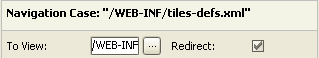
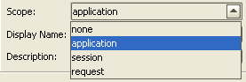
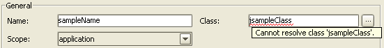
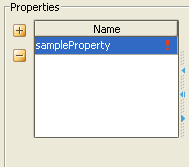

XML DOM API
Abstract
This article is intended for plugin writers who create custom web server integrations, or some UI for easy XML editing. It describes the Document Object Model (DOM) in Consulo --- an easy way to work with DTD or Schema-based XML models. The following topics will be covered: working with DOM itself (reading/writing tags content, attributes, and subtags) and easy XML editing in the UI by connecting UI to DOM.
It's assumed that the reader is familiar with Java, Swing, Consulo XML PSI (classes XmlTag, XmlFile, XmlTagValue, etc.), Consulo plugin development basics (application and project components, file editors).
Introduction
So, how to operate with XML from an Consulo plugin? Usually, one has to take XmlFile, get its root tag, and then find a required sub-tag by path.
The path consists of tag names, each of them a string.
Typing these everywhere is tedious and error-prone.
Let's assume you have the following XML:
<root>
<foo>
<bar>42</bar>
<bar>239</bar>
</foo>
</root>
Let's say you want to read the contents of the second bar element, namely, "239".
It's not correct to create chained calls like
file.getDocument().getRootTag().findFirstSubTag("foo").
findSubTags("bar")[1].getValue().getTrimmedText()
because each call here may return null.
So the code would probably look like this:
XmlFile file = ...;
final XmlDocument document = file.getDocument();
if (document != null) {
final XmlTag rootTag = document.getRootTag();
if (rootTag != null) {
final XmlTag foo = rootTag.findFirstSubTag("foo");
if (foo != null) {
final XmlTag[] bars = foo.findSubTags("bar");
if (bars.length > 1) {
String s = bars[1].getValue().getTrimmedText();
// do something
}
}
}
}
Looks awful, doesn't it? But there's a better way to do the same thing.
You just need to extend a special interface --- DomElement.
For example, let's create several interfaces:
interface Root extends com.intellij.util.xml.DomElement {
Foo getFoo();
}
interface Foo extends com.intellij.util.xml.DomElement {
List<Bar> getBars();
}
interface Bar extends com.intellij.util.xml.DomElement {
String getValue();
}
Next, you should create a DomFileDescription object, pass to its constructor the root tag name and root element interface, and register it with extension point com.intellij.dom.fileDescription.
NOTE If your plugin targets 2019.1 or later, please use extension point
com.intellij.dom.fileMetaDatainstead and specifyrootTagNameanddomVersion/stubVersioninplugin.xml.
You can now get the file element from DomManager.
To get the "239" value, you only have to write the following code:
DomManager manager = DomManager.getDomManager(project);
Root root = manager.getFileElement(file).getRootElement();
List<Bar> bars = root.getFoo().getBars();
if (bars.size() > 1) {
String s = bars.get(1).getValue();
// do something
}
I suppose this looks a little bit nicer.
You often work with your model in more than one place.
Re-creating the model is too inefficient, so we cache it for you, and any subsequent calls to DomManager.getFileElement() will return the same instance.
So, it is useful to invoke this method just once, and then keep everywhere only the "root" object you've obtained.
In this case you wont need to repeat that scary first line, and the code will look even nicer.
It is also important to note that with this scenario we avoid potential NullPointerException: our DOM guarantees that every method accessing a tags child will return a not-null element, even if the correspondingly-named sub-tag doesn't exist.
That may seem strange at a first glance, but it appears to be rather convenient.
How does it work? Simple.
Given those interfaces, DOM generates all code for accessing correct sub-tags and creating model elements at runtime.
The sub-tag names and element types are taken from method names, return types and method annotations, if any.
In most cases annotations can be omitted, as in our example, but this is discussed further in this article anyway.
Now let us explore more thoroughly what the DOM can do, and look at possible ways of representing various XML concepts such as tag content, attributes or sub-tags. Later we will discuss basic methods for working with the model, as well as cover more advanced functionality. Finally, we'll see how to easily create an UI editor for DOM model elements.
Building the Model
Tag Content
In XML PSI, tag content is referred to as tag value, so well do the same for consistency. To read and change a tag value, you have to add two methods (getter and setter) to your interface, like this:
String getValue();
void setValue(String s);
These method names (getValue and setValue) are standard, and they are used for accessing tag values by default.
If you want to use custom method names for the same goal, you should annotate these methods with @TagValue, for example:
@TagValue
String getTagValue();
@TagValue
void setTagValue(String s);
As you can see, our accessors work with String values.
This is natural, since XML represents a text format, and tag content is always text.
But sometimes you may want to operate with integers, booleans, enums, or even class names (they, of course, will be represented as PsiClass), and more generic Java types (PsiType).
In such cases, you just need to change the type in methods to the one you need, and everything will keep working correctly.
Custom Value Types
If you operate with even more exotic types, you should tell DOM how to deal with them.
First, annotate your accessor methods with the @Convert annotation, and specify your own class that should extend the Converter<T> class in the annotation.
Here T is your exotic type, while Converter<T> is a thing that knows how to convert values between String and T.
If the value cannot be converted (for example, "foo" is not convertible into Integer), the converter may return null.
Please also note that your implementation should have a no-argument constructor.
Let us consider an interesting case when T represents an enum value.
Usually, the converter just searches for enum elements with the names specified in XML.
But sometimes, for their names, you may need or want to use values that are not valid Java identifiers.
For example, CMP version in EJB may be "1.x" or "2.x", but you can't create Java enums with such names.
For such cases, let your enum implement NamedEnum interface, and then name your enum elements as you wish.
Now, just provide the getValue() implementation that will return the right value to match with XML contents, and voilà!
In our example, the code will look as follows:
enum CmpVersion implements NamedEnum {
CmpVersion_1_X ("1.x"),
CmpVersion_2_X ("2.x");
private final String value;
private CmpVersion(String value) {
this.value = value;
}
public String getValue() { return value; }
}
As we have already mentioned, an XML tag may have lots of artifacts besides its value: there can be attributes, children, but rather often (e.g., according to DTD or Schema) it should have only the value. Of course such tags also need a DOM element to associate with. And we provide such an element:
interface GenericDomValue<T> {
T getValue();
void setValue(T t);
@TagValue
String getStringValue();
@TagValue
void setStringValue(String s);
}
So, you can just specify a particular T when using this interface --- and everything will work.
Methods that work with String are provided for many reasons.
For example, your T is PsiClass.
It would be useful to highlight invalid values in UI.
To get the value to highlight (the string from the XML file) we have the getStringValue() method.
The error message will be taken from the converter via getErrorMessage().
Attributes
Attributes are also rather simple to deal with.
You can read their values, set them, and operate with different types.
So it's natural to create something like GenericDomValue<T> and then work as usual. "Something like" will be an inheritor, as shown below:
interface GenericAttributeValue<T> extends GenericDomValue<T> {
XmlAttribute getXmlAttribute();
}
Consider that you want to work with an attribute named some-class having a value of type PsiClass:
@Attribute("some-class")
GenericAttributeValue<PsiClass> getMyAttributeValue();
That's all! Now you can get/set values, resolve this PsiClass, get its String representation, etc.
The name of the attribute will be taken from the method name (see next paragraph).
If you name your method in a special way, you can even omit the annotation.
For example:
GenericAttributeValue<PsiClass> getSomeClass();
The DomNameStrategy interface specifies how to convert accessor names to XML element names.
Or more precisely, not the full accessor names, but rather the names minus any "get", "set" or "is" prefixes.
The strategy class is specified in the @NameStrategy annotation in any DOM element interface.
Then any descendants and children of this interface will use this strategy.
The default strategy is HyphenNameStrategy, where words are delimited by hyphens (see sample above).
Another common variant is JavaNameStrategy that capitalizes the first letter of each word, as in Java's naming convention.
In our example, the attribute name would be "someClass".
If attribute doesn't define a PsiClass, but some other custom T that needs a converter, you just need to specify the @Convert annotation to the getter.
Please note that the attributes getter method will never return null, even if the attribute isn't specified in XML.
Its getValue(), getStringValue() and getXmlAttribute() methods will return null, but the DOM interface instance will exist and be valid.
If the element has an underlying attribute, this can be easily fixed (surely, only if you need that): just call the undefine() method (defined in DomElement), and the XML attribute disappears, while GenericAttributeValue remains valid.
Children: Fixed Number
You may often deal with tags that have at most one sub-tag with the given name (e.g. <ejb-name>, <ejb-class> or <cmp-field>) in tags defining entity EJBs.
To work with such children, provide getters for them.
These getters should have a return type that extends DomElement:
GenericDomValue<String> getEjbName();
GenericDomValue<String> getEjbClass();
CmpField getCmpField();
There's also an annotation to designate such children explicitly: @SubTag.
Its "value" attribute contains a tag name.
If it is not specified, the name is implied from the method name using the current name strategy.
Sometimes it is the sub-tag's presence that means something, rather than its content --- <unchecked> in EJB method permissions, for example.
If it exists, then permissions are unchecked, otherwise checked.
For such things one should create a special GenericDomValue<Boolean> child.
Usually its getValue() returns true if there's "true" in a tag value, false if there's "false" in a tag value, and null otherwise.
In the @SubTag annotation, you can specify the attribute like indicator=true.
In this case, getValue() will return true if the tag exists and false otherwise.
Let's consider another interesting example inspired by EJB, where there is a relation that has two roles, each designating one relation end: first role and second role. Both are represented by tags with the same values. So, we could create a collection of role elements, and every time we access some role we would check if this collection has sufficient number of elements. But one of the main purposes of the DOM is to eliminate unnecessary checks. So why cant we have a fixed (more than one) number of children with the same tag name? Let's have them!
@SubTag(value = "ejb-relationship-role", index = 0)
EjbRelationshipRole getEjbRelationshipRole1();
@SubTag(value = "ejb-relationship-role", index = 1)
EjbRelationshipRole getEjbRelationshipRole2();
The first method will return the DOM element for the first subtag named <ejb-relationship-role>, and the second --- for the second one.
Hence the term "fixed-number" for such children.
According to DTD or Schema, there should be fixed number of subtags with the given name.
Most often this fixed number is 1; in our case with the relations it is 2.
Just like attributes, fixed-number children exist regardless of underlying tag existence.
If you need to delete tags, it can be done with the help of the same undefine() method.
For children of GenericDomValue type, you can also specify a converter, just as you can for attributes.
Children: Collections
One more common case in DTD and Schemas is when children have the same tag name and a non-fixed upper limit in count.
Their accessors differ from those of the fixed-number children in the following: the return result is Collection or List of a special type that extends DomElement, and if you want to use name strategies, the method name must be in pluralized form.
For example, in EJB we would have the following method:
List<Entity> getEntities();
There's also an annotation @SubTagList where you can explicitly specify the tag name.
Returned collections cannot be modified directly.
To delete an element from collection, just call undefine() on this element.
The tag will then be removed, and element will become invalid (DomElement.isValid() == false).
Note that this behavior differs from that of fixed-number children and attributes: they are always valid, even after undefine().
Again, unlike those children types, collection children always have valid underlying XML tags.
Adding elements is a little bit harder. Since all DOM elements are created internally, you can't just pass some of your DOM elements to some method, to add the element to the collection. In fact, you have to ask a parent element to add a child to the collection. In our example it's done in the following way:
Entity addEntity(int index);
which adds an element to wherever you want, or
Entity addEntity();
which adds a new DOM element to the end of the collection.
Please note the singular tense of the word "Entity".
That's because here we deal with one Entity object, while in the collection getter we dealt with potentially many entities.
Now, you can do anything you want with the returned value: modify, define the tag's value, children, etc.
The last common case is also a collection, but one consisting of tags with different names that are arbitrarily mixed. To work with it, you should define collection getters for all tag names within the mixed collection, and then define an additional specially annotated getter:
// <foo> elements
List<Foo> getFoos();
// <bar> elements
List<Bar> getBars();
// all <foo> and <bar> elements
@SubTagsList({"foo", "bar"})
List<FooBar> getMergedListOfFoosAndBars();
The annotation here is mandatory - we cannot guess several tag names from one method name.
To add elements to such mixed collections, you should create "add" methods for each possible tag name:
@SubTagsList(value={"foo","bar"}, tagName="foo") Fubar addFoo();
@SubTagsList(value={"foo","bar"}, tagName="bar") Fubar addBar(int index);
The index parameter in the last example means the index in the merged collection, not in the collection of tags named "bar".
Dynamic Definition
You can extend existing DOM model at runtime by implementing com.intellij.util.xml.reflect.DomExtender<T>.
Register it in "extenderClass" attribute of EP com.intellij.dom.extender, where "domClass" specifies DOM class <T> to be extended. DomExtensionsRegistrar provides various methods to register dynamic attributes and children.
If the contributed elements depend on anything other than plain XML file content (used framework version, libraries in classpath, ...), make sure to return false from DomExtender.supportsStubs().
Generating DOM from Existing XSD
DOM can be generated automatically from existing XSD/DTD. Output correctness/completeness will largely depend on the input scheme and may require additional manual adjustments.
Follow these steps:
- Run IntelliJ IDEA with Plugin DevKit enabled in internal mode
- Select Tools | Internal Actions | DevKit | Generate DOM Model
- Select Scheme file and set options, then click "Generate" to generate sources
- Modify generated sources according to your needs
IDE Support
Plugin DevKit supports the following features for working with DOM related code:
DomElement- provide implicit usages for all DOM-related methods defined in inheriting classes (to suppress "unused method" warning)DomElementVisitor- provide implicit usages for all DOM-related visitor methods defined in inheriting classes (to suppress "unused method" warning)
Working with the DOM
Class Choosers
It often happens that a collection contains same-named tags that may have different structure or even be represented by different types in the DTD or Schema.
As an example, JSF Managed Beans may be of three types.
If a <managed-bean> tag contains a <map-entries> sub-tag, then the Managed Bean type is MapEntriesBean.
If it contains a <list-entries> sub-tag — can you guess? Right — ListEntriesBean! Otherwise it's a PropertyBean (all three interfaces extend ManagedBean).
And when we write List<ManagedBean> getManagedBeans(), we expect to get not only a list where all elements are instances of the ManagedBean interface, but a list where each element is of a certain type, i.e. MapEntriesBean, ListEntriesBean, or PropertyBean.
In such cases one should decide which interface the DOM element should actually implement (according to the given tag).
This is achieved by extending the TypeChooser abstract class:
public abstract class TypeChooser {
public abstract Type chooseType(XmlTag tag);
public abstract void distinguishTag(XmlTag tag, Type aClass) throws IncorrectOperationException;
public abstract Type[] getChooserTypes();
}
Here, the first method (chooseType()) does exactly what it is named after (chooses the particular type, most often it's a class).
The second one (distinguishTag()) acts in reverse: it modifies a tag so that when the element is read from an XML file next time (for example, after the user has closed and opened the project again), the newly created DOM element will implement the same interface and no model data will be lost.
Finally, getChooserTypes() just returns all the types that could be returned by chooseType().
To make your TypeChooser work, register it in your overridden DomFileDescription.initializeFileDescription() method by calling registerTypeChooser().
Useful Methods of DomElement and DomManager
PSI Connection
Of course, DOM is tightly connected to XML PSI, so there's always a way of getting the XmlTag instance (which can be null for fixed-number children and attributes) using the getXmlTag() method.
We remember that in GenericAttributeValue there's also the getXmlAttribute() method.
In general case there is getXmlElement() method.
You can also get a DOM element by its underlying XML PSI element using the DomManager.getDomElement() method.
If DOM element has no underlying XML element, it can be created by calling ensureTagExists().
To delete a tag, use the already known undefine() method.
This method will always delete the underlying XML element (tag or attribute).
If the element was a collection child, then neither it nor its entire sub-tree will be valid anymore.
Tree Structure
In every normal tree there's always a possibility to walk up. DomElement is no exception.
Method getParent() just returns element's parent in tree.
The method <T extends DomElement> T getParentOfType(Class<T> requiredClass, boolean strict) returns the tree ancestor of the given class.
You can see the standard strict parameter, that can return the DOM element itself, if it's false and your current DOM element is an instance of requiredClass.
Finally, getRoot() will return the DomFileElement, which is the root of every DOM tree.
Validity
An element becomes invalid if it has been deleted explicitly or due to external PSI changes. Fixed-number children and attributes are meant to stay valid as long as possible, no matter what happens with XML. They can become invalid only if they have collection tree ancestor that has been deleted.
Newly created DOM elements are always correct and valid, so their isValid() methods will return true.
Element validity is very important, since you cannot invoke any methods on invalid elements (except, of course, isValid() itself).
DOM Reflection
DOM also has a kind of reflection, called "Generic Info".
One would use it to be able to access children by tag names directly, instead of calling getter methods.
See DomGenericInfo interface and getGenericInfo() methods in DomElement and DomManager for more information.
There's also DomElement.getXmlElementName() method that returns the name of a corresponding tag or attribute.
Presentation
DomElement.getPresentation() returns an instance of ElementPresentation, an interface that knows presentable element type, name, and sometimes even its icon.
Presentations are actually obtained from presentation factory objects that, like ClassChoosers's, should be registered in ElementPresentationManager as early as possible.
You can specify type name and icon for all elements of some class, ways of getting type name, icon and presentable name for particular objects.
When not specified, presentable name is taken from the object itself, if it contains a method annotated with @NameValue annotation, that returns String or GenericValue.
If there's no such method, it will return null.
For DomElement, there's another way to get this presentable name:
DomElement.getGenericInfo().getElementName().
Events
If you want to be notified on every change in the DOM model, add DomEventListener to DomManager.
DOM supports the following events: tag value changed, element defined/undefined/changed, and collection child added/removed.
Highlighting Annotations
The DOM supports error checking and highlighting.
It's based on annotations which you add to the DOM element in a special place (don't confuse these annotations with the ones of Java 5 — they are very different).
You need to implement the DomElementAnnotator interface, and override DomFileDescription.createAnnotator() method, and create this annotator there.
In DomElementsAnnotator.annotate(DomElement element, DomElementsProblemsHolder annotator) you should report about all errors and warnings in the element's sub-tree to the annotator (DomElementsProblemsHolder.createProblem()).
You should return this annotator in the corresponding virtual method of the DomFileDescription.
Automatic Highlighting (BasicDomElementsInspection)
The following errors can be highlighted automatically by providing an instance of BasicDomElementsInspection:
@Requiredelement missing or having empty text- XML value cannot be converted by some
Converter - name is not unique while it should be
The latter case requires you to specify the name getter with @NameValue annotation.
The checking uses the DomFileDescription.getIdentityScope() method to get the element defining the root scope in which the name should be unique.
To suppress spellchecking annotate your DomElement with @com.intellij.spellchecker.xml.NoSpellchecking.
Required Children
There is a common case in error highlighting, when one needs to say, that some required sub-tag or attribute is missing.
DOM will do this for you automatically, if you annotate the getter for that child with the @Required annotation.
For collection children getters, this annotation will mean, that the collection should be not empty (corresponding to '+' sign in DTD).
Also, when you create a new element that has required fixed-number or attribute children, their tags or attributes will also be created in XML.
Resolving
Remember the interface GenericDomValue<T> and its sub-interface GenericAttributeValue<T>? Remember, that ANY class may be passed as T — for example, let's interpret GenericDomValue<PsiClass> as a reference to a class.
Then we can always consider it as a reference to an object of class T! With Strings or enums, it is not a very useful idea, but we'll use it in another way.
Very often XML has such a structure that an object is declared at some place, and is referenced at some other place (more precisely, in a tag or attribute value).
So, if you want to create a method like GenericValue<MyDomElement> getMyDomElementReference(), then you just have to specify a proper converter that will find an instance in your model of MyDomElement with the name specified in the GenericDomValue.
That's the core idea.
Since creating such converters is quite boring, we've done it for you.
You don't have to annotate reference getters at all, as the name resolution will be made automatically.
Elements will be searched by name, and the name will be taken from the method annotated with @NameValue.
The converter used is DomResolveConverter.
Its constructor takes a parameter, so it can't be referenced in @Convert annotation, but its subclasses (if you create them) — can.
If you still want to specify explicitly that your reference to DomElement should be resolved "model-wide", use the @Resolve annotation parameterized with the desired class.
The resolution scope will be taken from the DomFileDescription.getResolveScope().
In addition to the above, auto-resolving in DOM also provides some features in your XML text editor: error highlighting, completion, Find Usages, Rename Refactoring...
Unresolved references will be highlighted, and even completed.
If you want to create a custom converter and want to have this code insight with it, you should extend not only the Converter but ResolvingConverter.
It has one more method getVariants(), where you'll have to provide the collection consisting of all targets your reference may resolve to.
Those familiar with PsiReference will recognize the similarities here.
If you need to choose a Converter depending on other values (e.g. in sibling/parent element) or any runtime condition (e.g. presence or version of library), you can use WrappingConverter. See also GenericDomValueConvertersRegistry for managing an extensible registry of available Converters to choose from.
Mock and Stable Elements
Your DOM elements do not have to be tied to a physical file. DomManager.createMockElement() will help you to create a virtual element of a given class with the given module.
An element may be physical or not. 'Physical' here means that DOM will create a mock document for it, so you can enjoy Undo functionality if you pass this document to the right place in file editor.
DomElement.copyFrom() allows you to copy information from one DomElement to another.
In fact, it just replaces XML tags, and all the old data is lost.
Nevertheless, the element's fixed-number children don't become invalid, they only contain new tag values, attribute values, etc.
The tree is actually rather conservative.
The combination of createMockElement() and copyFrom() is useful for editing element contents in dialogs.
You create a mock copy of an element, work with it in the dialog and then, if the user doesn't cancel, copy the element back to the main model.
Since it's a common case, a special shortcut method has been created in DomElement, called createMockCopy().
Consulo's XML parser is incremental: changes in text do not cause the whole file to be reparsed.
But you should keep in mind that this rule may sometimes not work correctly.
For example, your DOM elements can unexpectedly become broken as a result of manual editing of the XML file (even if it didn't happen inside those elements).
If a file editor depends on such a broken element, this can lead to closing the tab, which isn't very nice from the user's point of view.
For example, suppose you have an entity bean named "SomeEntity".
You open an editor for it, then you go into the XML, change the tag name from entity to session, and then back to entity.
Of course, no DOM element can survive after such blasphemy.
But notwithstanding, you still want your editor to stay open! Well, there is a solution, and it's called DomManager.createStableValue(Factory factory).
This method creates a DOM element that delegates all its functionality to some real element (returned from the factory parameter).
As soon as that real element becomes invalid, the factory is called once more, and if it returns something valid, it becomes the new delegate.
And so on... In the example with EJB, the factory would once again look for an Entity Bean named "SomeEntity".
Stable DOM elements also implement the StableElement interface, which has the following methods:
DomElement getWrappedElement()— just returns the current element to which all method calls are delegated;void invalidate()— makes the wrapped element invalid. Any following method call will cause the factory to create a new delegate;void revalidate()— calls the factory, and if it returns something new (i.e. not the same as the current wrapped element) invalidates the old value and adopts the new one.
Visitor
Visitor is a very common design pattern.
DOM model also has a visitor, and it's called DomElementVisitor.
The DomElement interface has methods accept() and acceptChildren() that take this visitor as a parameter.
If you look at the interface DomElementVisitor itself, you may be surprised, since it has only one method: visitDomElement(DomElement).
Where is the Visitor pattern? Where are all those methods with names like visitT(T) that are usually found in it? There are no such methods, because the actual interfaces (T's) aren't known to anyone except you.
But when you instantiate the DomElementVisitor interface, you may add there these visitT() methods, and they will be called! You may even name them just visit(), specify the type of the parameter, and everything will be fine.
For example, if you have two DOM element classes — Foo and Bar — your visitor may look like this:
class MyVisitor implements DomElementVisitor {
void visitDomElement(DomElement element) {}
void visitFoo(Foo foo) {}
void visitBar(Bar bar) {}
}
Implementation
Sometimes you may want to extend your model with some functionality that isn't directly connected with XML, but relates to your program logic. And the most appropriate place for this functionality is the DOM element interface. What to do then?
The simplest case is when you want to add to your interface a method that returns exactly what some other getter in this element (or in one of its children) returns.
You can easily write this helper method and annotate it with the @PropertyAccessor annotation, in which you should specify the path consisting of property names (getter names without the "get" or "is" prefixes).
For example, you can write:
GenericDomValue<String> getVeryLongName()
@PropertyAccessor("very-long-name")
GenericDomValue<String> getName()
In this case, the second method will return just the same as the first one.
If there were "foo.bar.name" instead of "very-long-name" in the annotation, the system would actually call getFoo().getBar().getName() and return the result to you.
Such annotations are useful when you're extending some interface that is inconsistent with your model, or you try to extract a common super-interface from two model interfaces with differently named children that have the same sense (see <ejb-ref> and <ejb-local-ref>).
The case just described is simple, but rare. More often, you really have to incorporate some logic into your model. Then nothing except Java code helps you. And it will. Add the desired methods to your interface, then create an abstract class implementing the interface, and implement there only methods that you added manually and that are not directly connected to your XML model. Note that the class should have a constructor with no arguments.
Now you only have to let DOM know that you wish to use this implementation every time you're creating a model element that should implement the necessary interface.
Simply register it using extension point com.intellij.dom.implementation and DOM will generate at run-time the class that not only implements the needed interface, but also extends your abstract class.
Models Across Multiple Files
Many frameworks require a set of XML configuration files ("fileset") to work as one model, so resolving/navigation works across all related DOM files.
Depending on implementation/plugin, providing filesets implicitly (using existing framework's setup in project) or via user configuration (usually via dedicated Facet) can be achieved.
Extend DomModelFactory (or BaseDomModelFactory for non-Module scope) and provide implementation of your DomModel.
Usually you will want to add searcher/utility methods to work with your DomModel implementation.
Example can be found in Struts 2 plugin (package com.intellij.struts2.dom.struts.model).
DOM Stubs
NOTE Please use it sparingly and only for heavily accessed parts in your DOM model, as it increases disk space usage/indexing run time.
DOM elements can be stubbed, so (costly) access to XML/PSI is not necessary (see Indexing and PSI Stubs for similar feature for custom languages).
Performance relevant elements, tag or attribute getters can simply be annotated with @com.intellij.util.xml.Stubbed.
Return true from DomFileDescription.hasStubs() and increase DomFileDescription.getStubVersion() whenever you change @Stubbed annotations usage in your DOM hierarchy to trigger proper rebuilding of Stubs during indexing.
Building a DOM-Based GUI
Forms
All forms that deal with DOM are organized in a special way.
They support two main things: getting data from XML into the UI, and saving UI data to XML.
The former is called resetting, the latter — committing.
There's Committable interface that has corresponding methods: commit() and reset().
There's also a way of structuring your forms into smaller parts, namely the Composite pattern: CompositeCommittable.
Methods commit() and reset() are invoked automatically on editor tab switch or undo.
So you only need to ensure that all your Swing structure is organized in a tree of CompositeCommittable, and all the hard work will be done by the IDE.
DOM controls are special descendants of Committable.
All of them implement DomUIControl.
Note that they are not Swing components — they are only a way of connecting DOM model and Swing components.
One end of the connection — the DOM element — is usually specified in the controls constructor.
The other end — Swing component — can be obtained in 2 ways.
The first is to ask DOM control to create it.
But that is rather inconvenient if you want to create the forms in, say, IntelliJ IDEA's GUI Designer.
In that case, you'll need the second way: ask the control to bind() to an existing Swing component of a correct type (that depends on the type of value that you're editing).
After that, your Swing components will be synchronized with DOM, they'll even highlight errors reported by DomElementsAnnotator.
Sometimes you may need to do some work (enable or disable some components, change their values) after a particular DOM control is committed.
Then you should define the addCommitListener() method of that DOM control and override the CommitListener.afterCommit() method.
This method will be invoked inside the same write action as the main commit(), so any changes you do in this method to the XML will be merged with the commit() in the Undo queue.
Simple Controls
With simple controls, you can edit GenericDomValue: simple text, class names, enums and boolean values.
These controls take a special object as a constructor parameter.
This object should implement the DomWrapper interface that knows how to set/get values to/from DOM model.
We have three major DomWrapper's: DomFixedWrapper<T> redirecting calls to GenericDomValue<T>, DomStringWrapper redirecting calls to string accessors of GenericDomValue, and DomCollectionWrapper that gets/sets values of the first element of the given GenericDomValue collection.
Some controls (those having a text field as part of itself) take additional boolean constructor parameter — commitOnEveryChange, whose meaning is evident from the name.
We don't recommend using it anywhere except small dialogs, because committing on every change slows down the system significantly.
Most often these controls are created by DomUIFactory.createControl(GenericDomValue).
This method understands which control to create by using DOM reflection (DomGenericInfo, as you probably remember).
But sometimes you may want to create the controls directly.
So let's look at the simple controls more closely.
BooleanControl
It allows you to edit boolean values.
The control is bound to JCheckBox.

ComboControl
The control is bound to a non-editable JComboBox, so it can be used to choose something from a limited set.
One case of such a limited set is enum.
Or it can be a constructor where you can provide a Factory<List<String>>, and return from this factory anything you want (for example, a list of database names to choose from).
By default, the wrong values (written in XML, but not present in the list you've given to the control) are displayed in red.
Since it's common practice to specify custom CellRenderer for combo boxes, the control has the isValidValue(String) method.
If it returns false on the value you're rendering, you can highlight it in some way, to achieve the same result as the default renderer.
Or you can just delegate to that renderer in your own way.

BooleanEnumControl
Sometimes, when there are only 2 alternatives, it's convenient to use a check box instead of combo box.
This control is designed specially for such cases.
While being (and being bound to) a check box, the control edits not just "true" or "false", but any two String values, or two enum elements.
In the last case, it has a boolean invertedOrder parameter, to specify which element corresponds to the checked state.
By default invertedOrder is set to false, so the first element corresponds to the unchecked state, and the second — to the checked one.
If you set the parameter to true, the states will swap.
Editor-Based Controls
Please note that editor-based controls are built on Consulo's Editor instead of standard JTextField.
Since there's currently no way to instantiate Editor directly through the Open API, controls are bound to special JPanel inheritors, and their bind() method adds the necessary content to those panels.
TextControl
This control allows you to edit simple string values.
The control is bound to a TextPanel component.
There's also an inheritor of that panel — MultiLineTextPanel.
If you bind a StringControl to it, a big editor will appear on the screen.
In case you don't have space for a big editor, bind it to a BigTextPanel.
Then it will be filled with a text editor, and the browse button will be added to open a dialog with the big editor where you can type a longer string.
PsiClassControl
This is a one-line editor with a browse button that opens the standard class selection dialog.
The control accepts class names only.
It is bound to PsiClassPanel.

PsiTypeControl
This is almost the same as PsiClassControl, but allows entering not only class names, but also Java primitive types and even arrays.
It is bound to PsiTypePanel.
Collection Control
There is a special table component where each row represents one collection child.
It's called DomCollectionControl<T>, where T is your collection element type.
To function properly, it needs DomElement (parent of the collection), some description of the collection (sub-tag name or a DomCollectionChildDescription from DOM reflection), and a ColumnInfo array.
This can be passed to the constructor, or can be created in a DomCollectionControl inheritor, in an overriden method createColumnInfos().
What is a column info? It's just a somewhat more comfortable way to work with the table model.
It uses Java 5 generics and is more object-oriented.
So, it's named ColumnInfo<Item,Aspect>, where Item is a type variable corresponding to the type of elements in the collection, and Aspect is a type variable corresponding to this particular column information type: String, PsiClass, Boolean, etc.
The basic things that a column knows are: column name, column class, reading value (Aspect valueOf(Item)), writing value (setValue(Item item, Aspect aspect)), cell renderer (getRenderer(Item)), cell "editability" (isCellEditable(Item)), cell editor (getEditor(Item)), etc.
There are a lot of predefined column infos, so you'll probably never create a new one.
First, if a collection child is a GenericDomValue, it's usually convenient to edit it directly in the table.
For this, you may need one of the following classes: StringColumnInfo, BooleanColumnInfo, or more generic GenericValueColumnInfo.
But such collections are encountered very rarely.
A more common case is when a collection element is more complex and has several GenericDomValue children.
Then one may create a column for each of those children.
The appropriate column info is ChildGenericValueColumnInfo<T>.
It will ask you for a DomFixedChildDescription (one more thing from DOM reflection), a renderer and an editor — nothing else.
So, the main things left to customize are the renderer and the editor.
As for the renderer, there are two main choices: DefaultTableCellRenderer, and Consulo's BooleanTableCellRenderer.
Editors are more complicated, but they closely resemble simple DOM controls.
BooleanTableCellEditor, DefaultCellEditor(JTextField), ComboTableCellEditor, etc. DomUIFactory.createCellEditor() will create any of them automatically (including the editor for PsiClass), so that you won't need to think about which one to select every time.
Collection control is a complex control, so it's bound to a complex Swing component.
It's called DomTableView.
It has a toolbar (you can override DomTableView.getToolbarPosition() to customize its location), with Add and Delete buttons.
If you want, you may specify custom addition actions in DomCollectionControl.createAdditionActions() (it's recommended to extend ControlAddAction).
If there is only one addition action, it will be invoked after pressing the Add button; if there are many, then a popup menu will be displayed.
To change the removal policy, override the DomCollectionControl.doRemove(List<T>) method.
The toolbar may also have an Edit button, if you specify that DomCollectionControl.isEditable().
To add a behavior to this button, override DomCollectionControl.doEdit(T).
There can also be a Help button, if you pass a non-null String helpId parameter while constructing your DomTableView.
If there are no items in the collection, DomTableView may display a special text (DomTableView.getEmptyPaneText()), instead of an empty table.
You can add your own popup menu to the control.
Call the DomTableView.installPopup() method after construction, and pass a DefaultActionGroup with your popup actions.
Tables can have single or multiple (default) row selection.
If you want to change this behavior, override DomTableView.allowMultipleRowsSelection().

UI Organization
The easiest way to create a DOM-based UI form is to extend the BasicDomElementComponent class.
This will require you to pass some DOM element to the constructor.
Then you bind an IntelliJ IDEA GUI Designer form to your subclass and design a beautiful form there.
You will surely want to bind some controls to DOM UI, in which case you should of course ensure that they have right types.
Finally, you should create some DOM controls in class' constructor and bind them.
But you can create controls and bind them to the DomElement's children — GenericDomValue's automatically.
Just name your components properly and call the bindProperties() method in the constructor.
The field names should correspond to the getter names for the element's children.
They may also be prefixed with "my".
Imagine that you have such DOM interface:
public interface Converter extends DomElement {
GenericDomValue<String> getConverterId();
GenericDomValue<PsiClass> getConverterClass();
}
In this case, the UI form class can look like this:
public class ConverterComponent extends BasicDomElementComponent<Converter> {
private JPanel myRootPane;
private TextPanel myConverterId;
private PsiClassPanel myConverterClass;
public ConverterComponent(final Converter domElement) {
super(domElement);
bindProperties();
}
}
All the fields here are now bound to controls in a GUI form.
Very often you'll have to create your own file editor.
Then, to use all the binding and undo functionality, it's suggested to inherit your FileEditorProvider from PerspectiveFileEditorProvider, create an instance of DomFileEditor there, and pass a BasicDomElementComponent.
To easily create an editor with a caption at the top, like in our EJB and JSF, you may use the static method DomFileEditor.createDomFileEditor(). DomFileEditor automatically listens to all changes in the document corresponding to the given DOM element, and therefore refreshes your component on undo.
If you want to listen to changes in additional documents, use the methods addWatchedDocument(), removeWatchedDocument(), addWatchedElement(), removeWatchedElement() in DomFileEditor.
Conclusion
Thank you for your time and attention. We hope you've found this article really useful. You are welcome to post your questions and comments to our Open API and Plugin Development Forum.
Further Material
The following bundled open-source plugins make (heavy) use of DOM:
- Android
- Ant
- Plugin DevKit
- Maven
- Struts 2 (Ultimate Edition)